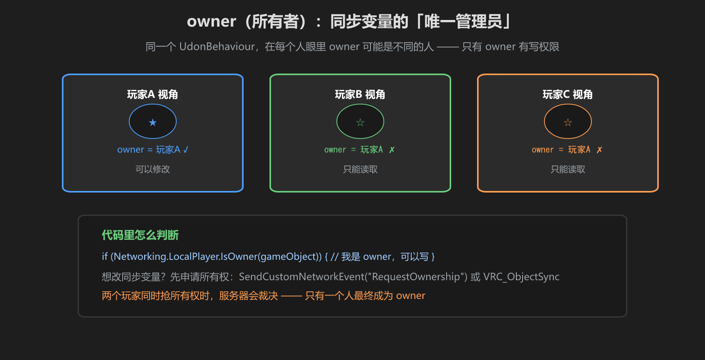
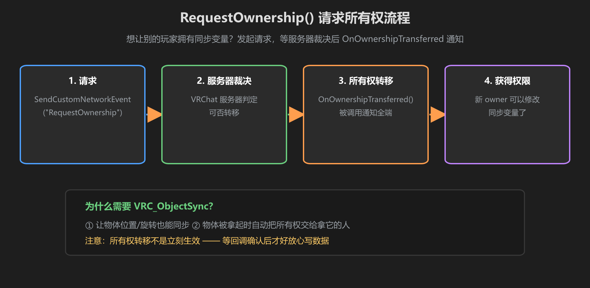

第 4 篇：权限与所有权 — owner、LocalPlayer、RequestOwnership
同步变量的写权限挂在 owner 身上。这一篇讲清楚：owner 到底是什么、怎么判断、怎么转移，以及一个重要的设计原则 —— 不要各端各算。
1. owner 是什么
每个带 UdonBehaviour 的物体，同一时刻只有一个 owner。谁是这个物体的 owner，谁就能改它的同步变量、也控制着它能不能被拿起等。新玩家进世界时，物体默认归最早进来的玩家（或世界创建者）。

图：同一个物体，owner 在每个人眼里都是同一人 —— 只有他有写权限
2. 用 LocalPlayer 判断自己是不是 owner
if (Networking.LocalPlayer.IsOwner(gameObject))
{
// 我是 owner：可以放心修改同步变量
}
else
{
// 我不是 owner：只能读，或申请所有权
}Networking.LocalPlayer 表示本端玩家。在每个人的客户端上，它代表各自的那个玩家。用 IsOwner(gameObject) 就能判断「我是不是这个物体的 owner」。
3. RequestOwnership()：请求所有权

图：发起请求 → 服务器裁决 → 回调确认 → 获得写权限
using VRC.SDKBase;
public void GrabControl()
{
// 我不是 owner 时，先请求所有权
if (!Networking.LocalPlayer.IsOwner(gameObject))
{
Networking.SetOwner(Networking.LocalPlayer, gameObject);
}
}
public override void OnOwnershipTransferred(VRCPlayerApi player)
{
// 所有权转移后触发：现在可以放心改同步变量了
if (player == Networking.LocalPlayer)
{
score += 1;
}
}别抢着写：所有权转移不是瞬间生效的。两个玩家同时抢时由服务器裁决，只有一个会成为 owner。在 OnOwnershipTransferred() 回调里确认后再写数据，才是最稳的。
4. VRC_ObjectSync：物体位置也同步
给物体挂上 VRC_ObjectSync 组件，物体的位置和旋转也会被同步。它的另一个重要作用：玩家拿起物体时，所有权自动转移给拿的人 —— 这样拿东西才能跟手、不打架。
- 需要同步位置/旋转 → 挂 VRC_ObjectSync
- 想实现「捡起来归我」→ 依赖 VRC_ObjectSync 的自动转移
5. 同步数据一致性：不要各端各算
最常见的同步 bug：每个客户端都在自己算分数，然后互相覆盖。正确做法是一个地方算，其他端只读：
// 错误示范：谁点谁算，最后谁也说不准
score += 1; // 每个人算自己的，数据冲突
// 正确做法：只有 owner 算
public void AddScore()
{
if (!Networking.LocalPlayer.IsOwner(gameObject)) return;
score += 1; // 数据只在这一处变化
}一致性原则：「状态只有一个权威来源」。判定、计分、抽奖……所有逻辑都让 owner 做，其他人用同步变量和事件接收结果。
学前检查清单
- 理解 owner 是唯一有写权限的玩家
- 会用 Networking.LocalPlayer.IsOwner() 判断身份
- 会写 RequestOwnership 并在回调里继续逻辑
- 知道 VRC_ObjectSync 的作用
- 明白「不要各端各算」的一致性原则